HONEYBOOK · COMMS · 2024
AKA messages & file permissions
How do you give a business owner control over exactly who sees messages, files, and activity?
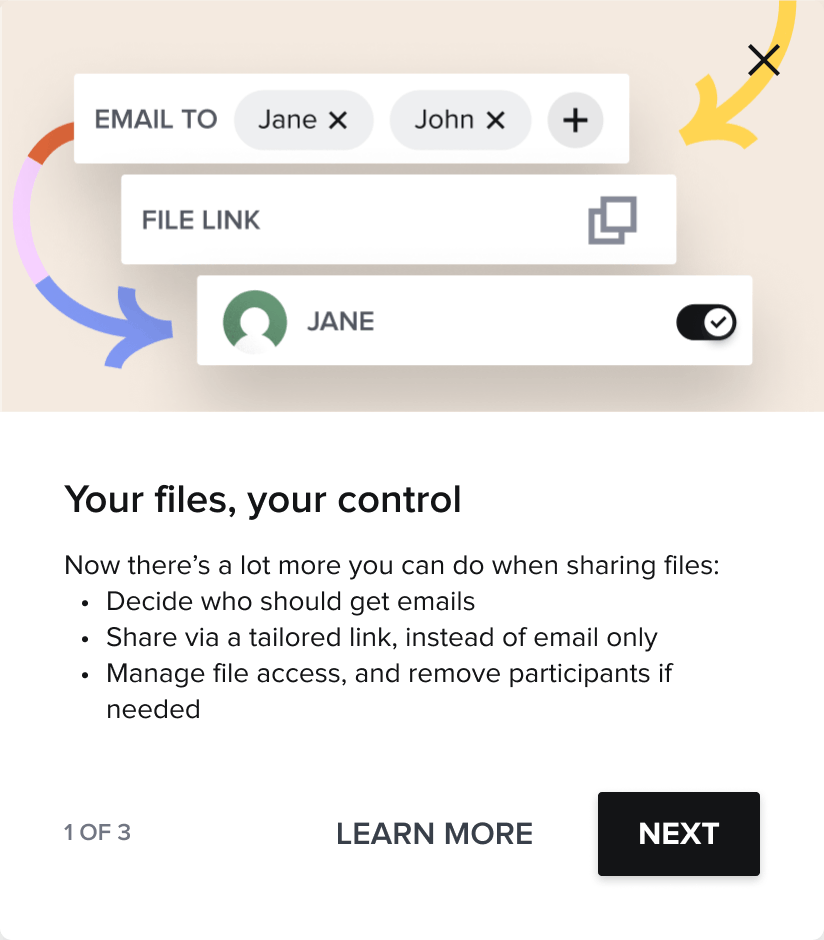
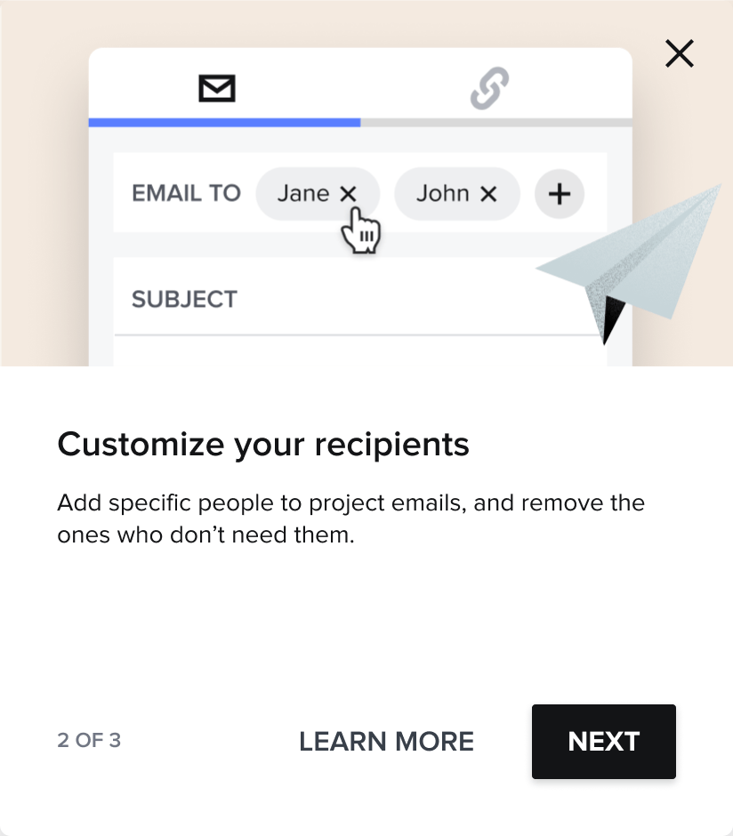
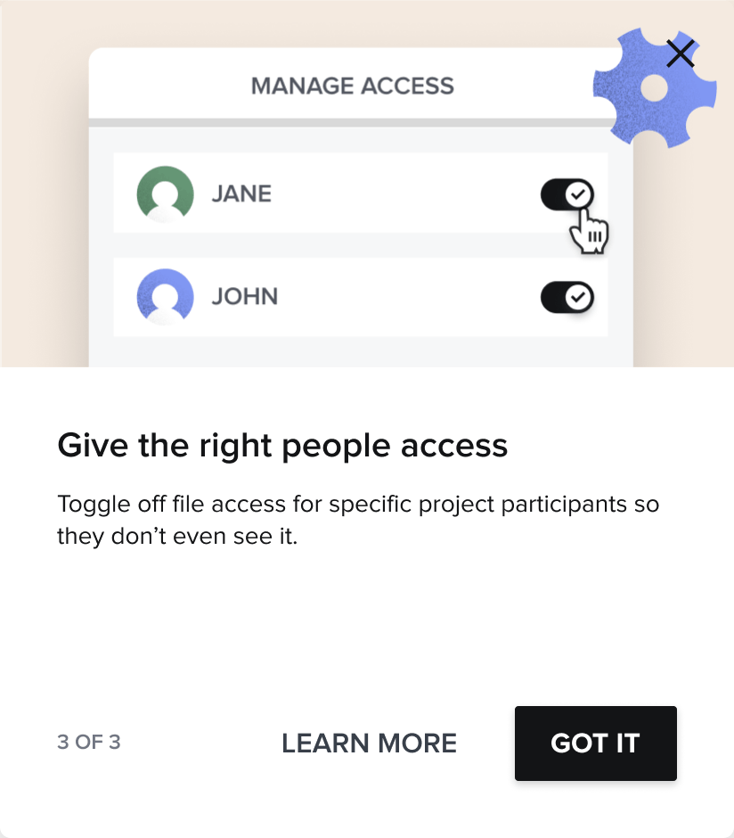
The first-time experience I designed to introduce the feature: three steps, each one naming a thing you can now do. (click any image below to enlarge)
CONTEXT
A HoneyBook project is rarely one-to-one. It holds clients, collaborators, and team members, but every email and shared file went to all of them at once. That's fine for a true 1:1 project; the moment a project involves more than one client, a collaborator, or a team member, it turns risky: the wrong person seeing the wrong message, or opening a file that wasn't meant for them.
Three problems kept surfacing:
BEFORE, REPLY: a feed reply always went to everyone already in the thread, with no way to change the recipients.
BEFORE, SHARE: the old share modal was a flat email-to list, with no way to manage visibility per recipient.
RESEARCH
We ran a study with 30 members to pressure-test the model. 61% wanted to decide case-by-case whether all past communication or only new communication is shared; 32% were uncomfortable with “share everything” as the only option. Most tellingly, 71% framed the value as not spamming clients and protecting sensitive information, not just tidiness. That reframed the design around recipient control and clear visibility, mapped against the underlying participant states.
71% wanted selective communication to avoid spamming clients and to protect sensitive information.
KEY RESEARCH FINDING
DATA & INSIGHTS
This wasn't a niche need. One in five emails already goes to multiple participants, 43% of members run 2+ projects with at least one client, and selective communication was the third most-requested feature in the community.
CONCEPTS
For one exploration (the share modal on a file), “Who sees what” could live in more than one place. I explored two directions before committing.
Direction one, permissions inline: authentication and per-recipient access built right into the Share-via-email and Share-via-link screens.
Direction two, the one I chose: a dedicated “Manage file access” dialog for per-participant control, kept separate from the send flow.
The shipped design kept the best of both: recipients and authentication inline, where the decision gets made, and a separate Manage file access modal for the finer-grained, per-person control.
DESIGN CHOICES
The complexity came from several directions at once: different permission levels inside an account, different needs for clients versus collaborators, and different norms across industries, where a wedding planner's project isn't structured like a business consultant's.
The permission flows I mapped: every interaction type, down to whether someone added mid-project should see what came before. Who sees what was the hard part; the UI was the easy part.
INTERFACE
The shipped share screen puts every decision in one place: who receives the file, whether they authenticate with a code before opening it, and a direct link to manage per-person access, all before anything sends.
The shipped Share screen: per-recipient sending with a view of who already has access, an authentication toggle for sensitive files, “Who can view this file?”, and a Manage file access entry.
WHAT SHIPPED
The release wasn't one screen. It was one mental model applied everywhere: see who, choose who. The feed composer, file sharing, and access management all got the same recipient control, on desktop and on mobile.
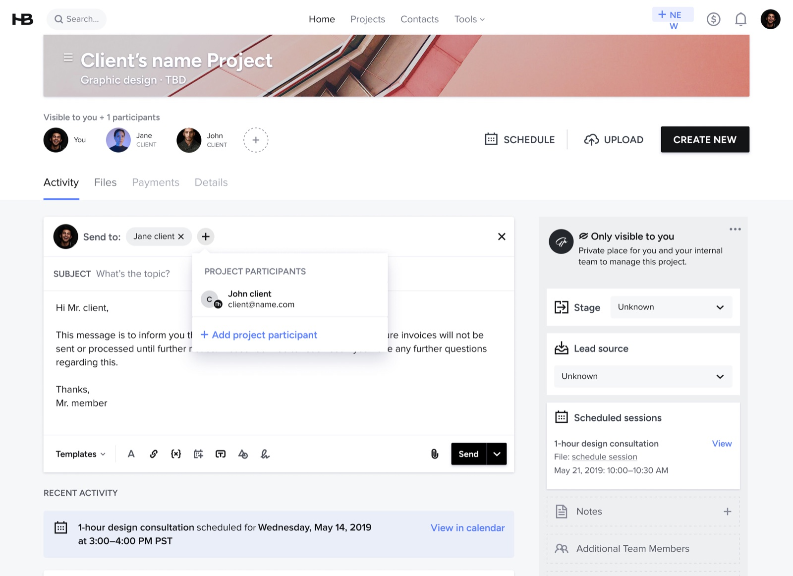
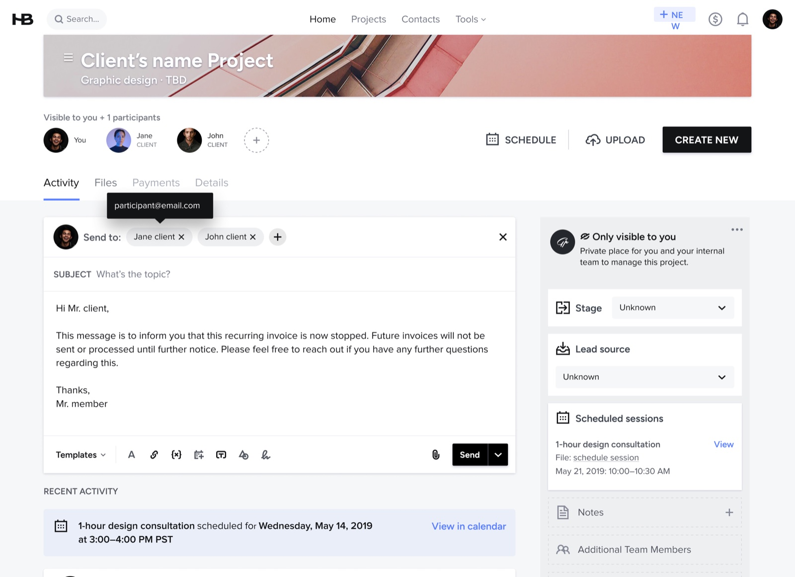
SHIPPED, FEED: every message starts with “Send to”. Pick recipients from the project's participants, or add someone new without leaving the composer.
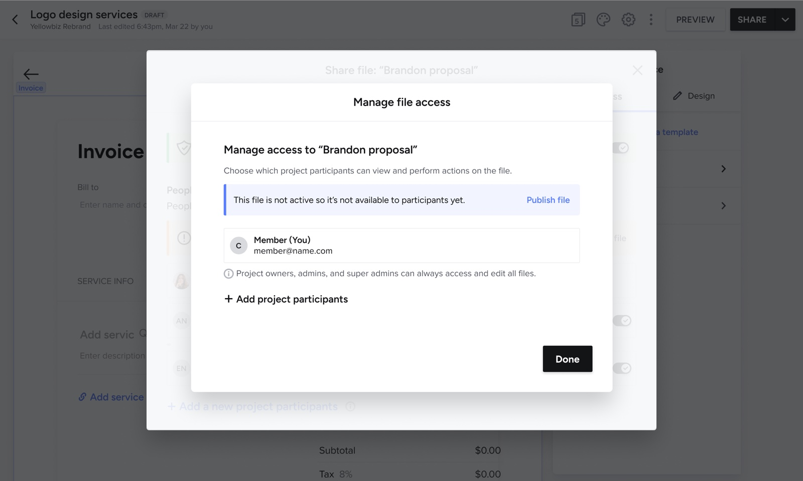
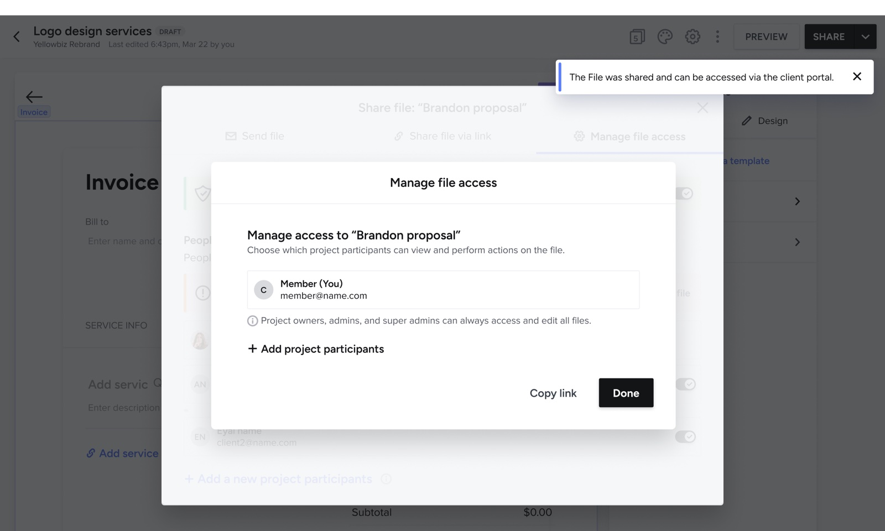
SHIPPED, FILE ACCESS: the same dialog before and after publishing. A draft isn't visible to anyone yet; once shared, the file is live in the client portal.
SHIPPED, TEAMS: per-participant visibility, one toggle per person, while owners, admins, and super admins always keep access.
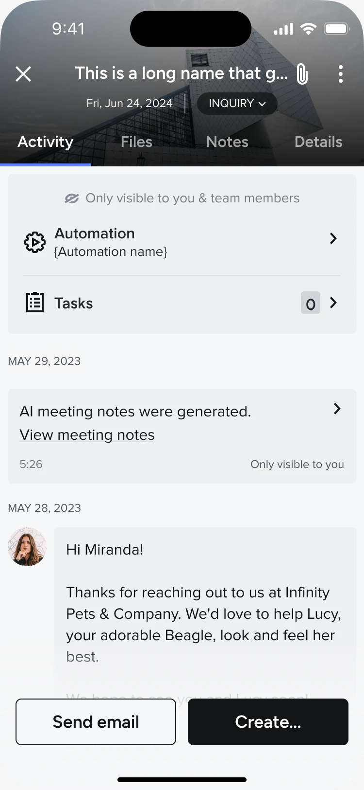
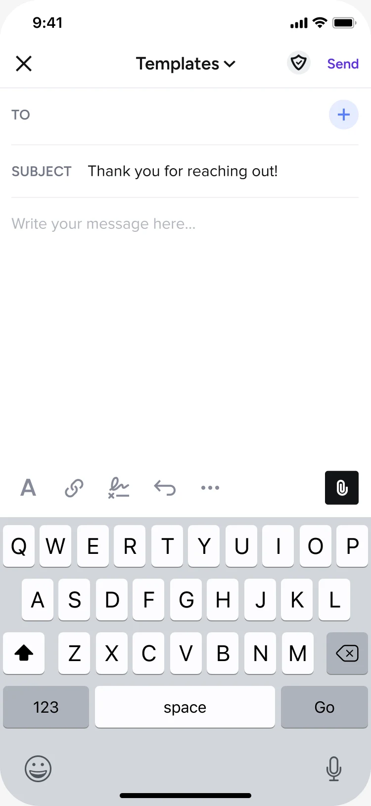
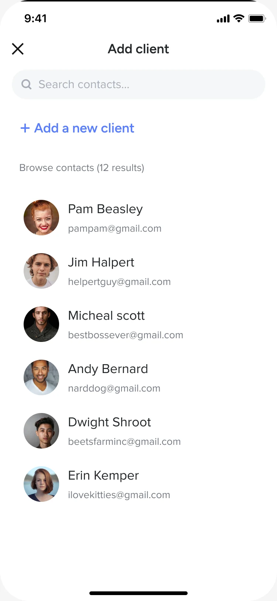
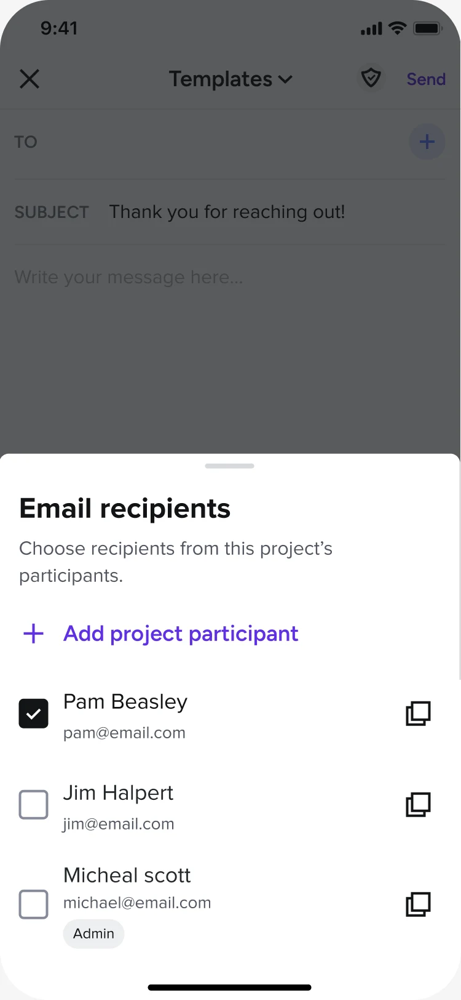
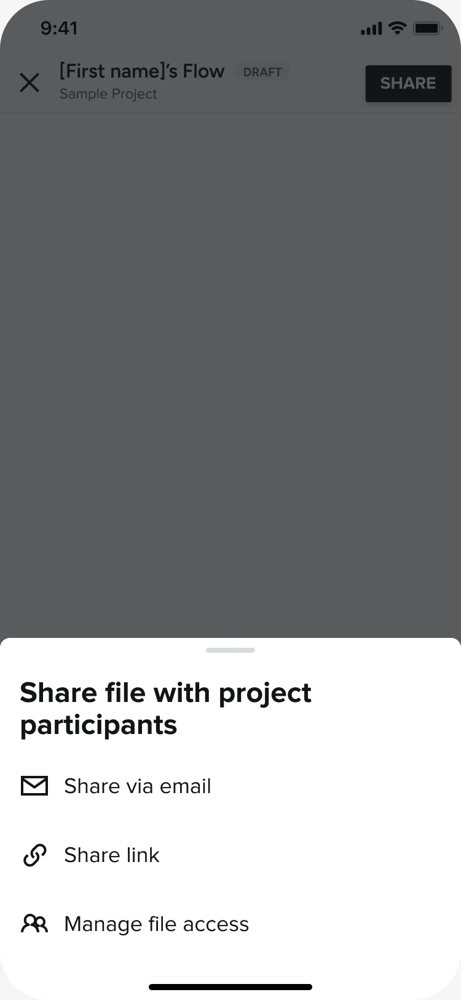
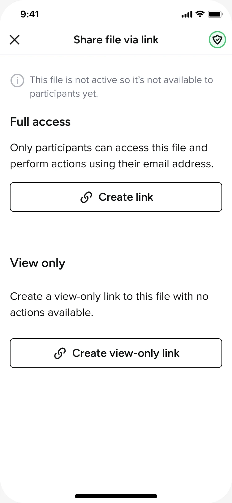
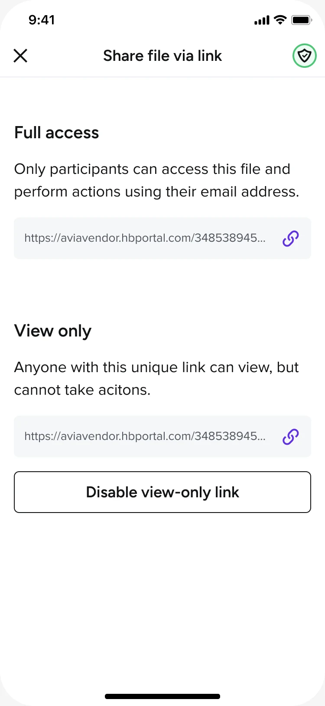
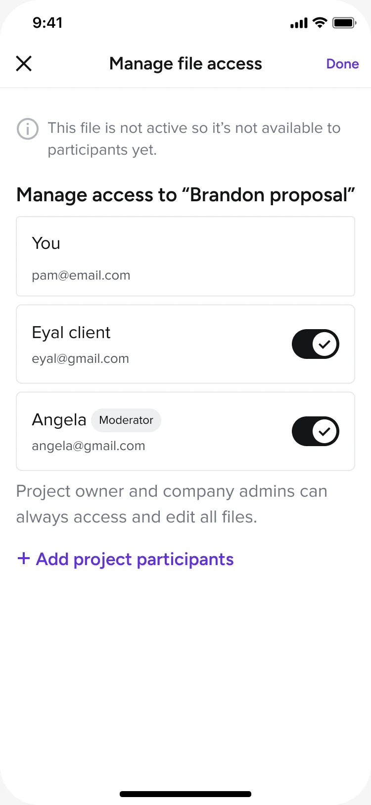
SHIPPED, MOBILE: the full loop on the phone. Sending a feed message to chosen recipients (left) and sharing a file with per-participant access (right).
OUTCOME
Shipped selective sending across the message feed and file sharing, with authentication for sensitive files and per-participant visibility across the workspace, and rolled out to all members. In pre-launch testing all four core tasks cleared an 80% success rate, and after launch adoption concentrated exactly where the problem lived: among members who run projects with more than one client, 37% of feed messages and 36% of shared files now go out selectively, rather than to everyone by default.